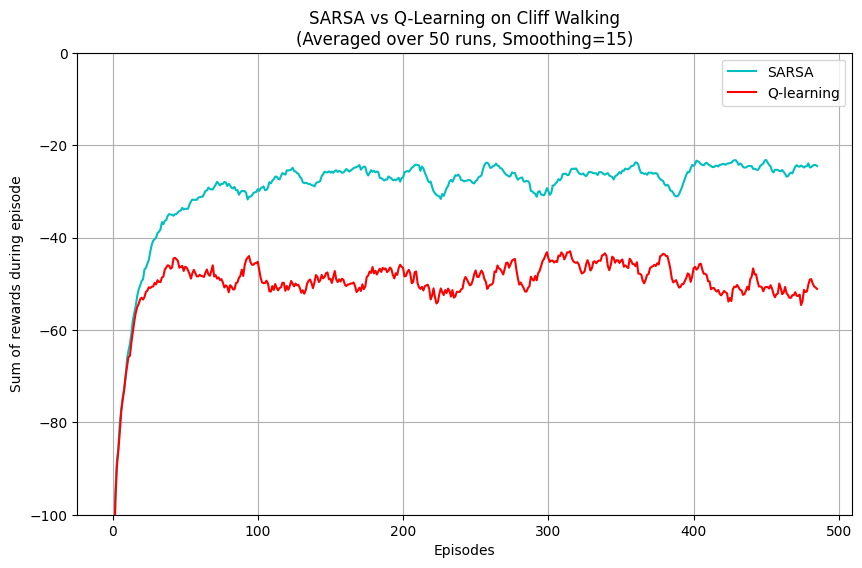
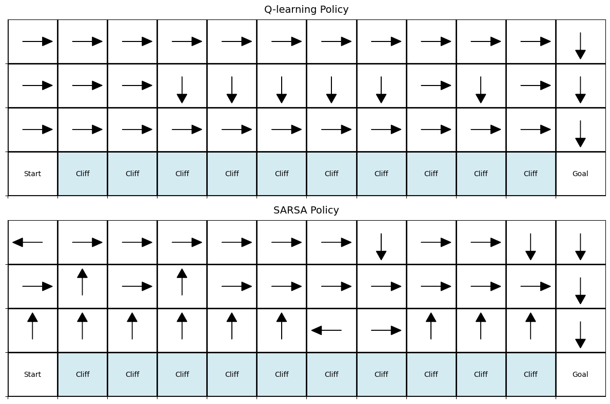

This project demonstrates the core differences between an off-policy algorithm (Q-learning) and an on-policy algorithm (SARSA) in the classic 4x12 Cliff Walking environment.
📥 Download Technical Report (PDF)Averaged over 50 runs, showing the total reward per episode. Q-learning occasionally falls off the cliff because of its epsilon-greedy exploration, keeping its average reward lower during training. SARSA discovers a safer path.

Q-learning learns the optimal (but risky) path right along the edge of the cliff. SARSA learns a longer, safer path further from the cliff's edge to avoid large penalties.

Off-policy vs. On-policy: Q-learning updates its estimates using the maximum action value roughly equivalent to adopting the optimal policy, thus learning the optimal but risky strategy. SARSA updates using the value of the next action actually taken, factoring in the epsilon-exploration. This leads SARSA to penalize states near the cliff where an exploration step falls off.
Risk Analysis: During training, Q-learning's reward oscillates more severely and converges to a lower sum. This happens because while the Q-values indicate the optimal policy (walking the edge), the actual agent is still exploring (ε = 0.1), which occasionally makes it step off the cliff. In contrast, SARSA's policy converges to a path farther from the cliff, absorbing the risk of epsilon exploration.
Optimal vs. Safe: In a deterministic test mode (epsilon=0), Q-learning is optimal. However, in applications where exploring or acting randomly can entail catastrophic consequences (e.g., medical treatments, autonomous driving), the more conservative on-policy learning of SARSA may be preferable.